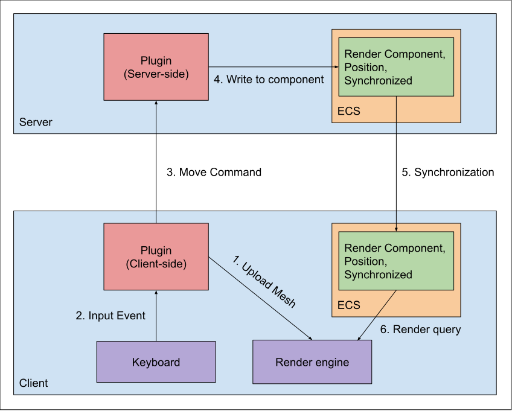
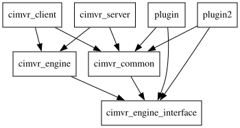
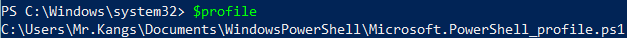

ChatImproVR
What is ChatImproVR?
ChatImproVR is a virtual world platform, with goals similar to that of VRChat, Neos, or SecondLife. A virtual world platform is a game engine and a set of tools to create and experience an immersive virtual space. These virtual spaces are then hosted online, where users can join them to socialize and enjoy the activities in the virtual world.
ChatImproVR will improve on existing virtual world platforms by promoting open source software and prioritizing user control over content, all while featuring excellent flexibility.
Who is ChatImproVR for?
Everyone! (TODO: Inclusive design)
Setting up a development environment
Installation
See the project's README.md file!
Preparation
Make sure you have the wasm32-unknown-unknown target installed;
rustup target add wasm32-unknown-unknown
Dependencies on Ubuntu:
sudo apt install build-essential cmake libxcb-render0-dev libxcb-shape0-dev libxcb-xfixes0-dev libspeechd-dev libxkbcommon-dev libssl-dev
Compilation
Build the client and server like so:
pushd server
cargo build --release
popd
pushd client
cargo build --release
popd
You can compile all of the example plugins with the compile_all.sh script. If you're on windows, sorry! Please open a PR.
While most crates are in a workspace, the client crate is unfortunately excluded due to an issue with the openxr crate.
Hosting a server
You may host a server with
cargo run --release -- <plugins>
Connection to a remote server
You may use the client to connect to a remote server like so:
cargo run --release -- --connect <ip>:5031 <plugins>
The default port is 5031, but this can be configured in the server with --bind <bind addr>:<port>
How does ChatImproVR work?
ChatImproVR is based on plugins. Plugins run on both the Client and the Server. Each plugin adds functionality to the virtual world by providing a number of Systems.
We refer to the Client or the Server a Plugin is running on as the "Host". Systems communicate with the Host via Channels and via the Entity Component System (ECS).
The Host can communicate with external APIs, and with the Remote. From the Client's perspective, the Remote is the Server. From the Server's perspective, the Remotes are the connected Clients.
Channels
Channels are modeled after the familiar Pub/Sub pattern. Systems subscribe to Channels, and receive Messages via their Inbox. Each Channel is referred to by it's Unique ID. This ID corresponds to exactly one responsibility and associated datatype. If the underlying datatype changes, the ID must also change. This is to ensure compatability between plugins. Otherwise, plugins may consume corrupted data.
Each channel is either Local or Remote. The Local Channels can only send Messages within their Host. Conversely, Remote Channels can only send messages to the Remote. This is to help avoid confusion as to where a message might have originated, and to make optimizing communication easier.
Entity Component System
ChatImproVR's ECS is very similar to other game engines' architectures (Bevy being a notable example). Essentially, the ECS acts as a global database, where Entities are simply keys and Components are sparsely populated columns in the metaphorical database. Systems make Queries to the ECS, which are usually joining one more more Components.
Each Host has it's own ECS. The Server's ECS is intended to contain the state of the world, while the Client's ECS' are intended to contain snapshots of the world and locally visible objects such as graphical user interfaces and markers, as well as predictions of motion or action.
One important difference from other engines is that ChatImproVR handles Components via their Unique ID, instead of by their datatype. Just like Channels, If the underlying datatype changes, the ID must also change. Another important difference is that Entities are intended to be universally unique. This means that Entities could be transferred between Servers, so items in the virtual world can be transferred throughout the metaverse.
Scheduling
Execution of Systems on each Host is broken up into a number of Stages. Currently, the following stages are available (listed in order of execution):
- Init: Executed once, right after the plugin is initialized.
- Pre-Update: Executed before each update, once per Frame.
- Update: Executed once per Frame.
- Post-Update: Executed after each update, once per Frame.
Synchronization
There is a special Sychronized component which, if attached to an Entity on the Server, will cause the entire Entity and all of it's Components to be copied to the Clients's ECS. This mechanism is intended to make it very easy to create content which is visible to all Clients immediately.
Expect this synchronization to be optimized, so that updates may not be immediate.
In the future, we may offer lazy/immediate/streamed variants of this component.
WebAssembly
What is WebAssembly?
WebAssembly (WASM for short) provides a sandboxed environment in which programs written in a variety of languages can interface with a host application. WASM is intended to provide a platform-agnostic and performant alternative to native code.
Limitations and features
Here we will go over some important aspects of working with WebAssembly in Rust. Firstly, that the standard library is available. Kind of. In general, functions of the stdlib that communicate with the outside world will not work; this includes but is not limited to: system time, files, sockets. Instead, one must rely on the interfaces provided by ChatImproVR. One exception to this rule is that allocation does work; one can allocate memory with reckless abandon, at least up to 4 GB.
Tips and tricks
Including content
If you need to include content with your plugin (e.g. models and textures), you may use the include_bytes!() macro provided in the standard library to embed these files in your WASM binary. For more advanced use-cases, consider the include dir crate.
Details
We use the wasm32-unknown-unknown target.
Client and Server
The client and server play very different roles in plugin developement. Deciding which code belongs server-side and which code belongs client-side can be challenging.
A simple description of the difference in semantics between client and server, is that changes made client-side will only be visible for that client, and changes made server-side can be made visible to all connected clients.
For example, let say that a user presses the left key to move an object to the left. If we want that behavior to only be visible for that user, then that code should be part of the client side and we do not need to send a message to the server to change the object. However, if the user wants to move an object which is visible to everyone else in the server, then that movement behavior should happen server-side; The client will send a command to the server requesting that the object must move left.
Therefore, it is worth thinking about the desired behaviors first; If you are planning to develop a plugin that multiple users will interact at the same time, then it is recommended to develop the bahavior of the event on the server-side. If you are planning to develop a story mode game, for example, that only one user will interect with other objects, developing the code client side would make sense and likely result in simpler code.
Update cycles and the Synchronized component
Many applications in ChatImproVR will have a structure like this:

We explain each step in this process below:
- On initialization, the client-side plugin uploads mesh data to the render engine, in preperation for the cycle. Note that this will not show anything on screen, because there is no entity in the client-side ECS yet.
- The client-side plugin receives an input event describing e.g. a key press.
- The client-side plugin processes the event, and sends a corresponding message (a movement command) to the server-side plugin.
- The server-side plugin processes the movement command and writes to the server-side ECS database. Note that the entity it writes includes a Render Component and a position, which describe which mesh to render and where it should be displayed in the world. Critically, the entity also includes the
Synchronizedcomponent, which instructs the server to perform the next step: - The ECS data on the server is copied to the client-side ECS. Any existing components attatched the corresponding entity client-side will be overwritten. This process is called Synchronization, and it happens automatically for entities which include the
Synchronizedcomponent. - The render engine queries the client-side ECS database, and displays the entity.
The responsibilities of the Plugin are as follows:
- Client-side
- Upload mesh data
- Receive input events
- Publish movement commands corresponding to input events
- Server-side
- Receive movement commands and update the ECS accordingly
Entity Component System
For general information on the ECS architecture, we recommend looking at Wikipedia.
This article contains information specific to ChatImproVR's ECS, and some of the specific features it has.
Entities
Entities in ChatImproVR are universally unique IDs. As of this writing, this isn't necessarily true in practice, but entities are intended to be treated this way. The point of making universally unique entity IDs is that entities can be transferred client and server, and even between servers without having to worry about collisions.
Entities are created and deleted plugin-side like so:
#![allow(unused)] fn main() { let my_entity = io.create_entity(); io.remove_entity(my_entity); }
Components
Components in ChatImproVR are identified by their unique ID and by their (maximum) size. This unique ID corresponds to one and only one data schema. If the component data type changes, one must also change the ID of the component to avoid corrupting data for potentially reliant third party plugins. One of the less ergonomic aspects of ChatImproVR's current implementation is that components are fixed-size. This means that a component must serialize to a data length less than or equal to the size prescribed in its ID. The reason for this is that it makes manipulating components in memory much easier, and necessitates the association of a data type with its (fixed) size.
New components data types are declared like so:
#![allow(unused)] fn main() { /// Component datatype /// Implements Serialize and Deserialize, making it compatible with the Component trait. #[derive(Serialize, Deserialize, Clone, Copy, Debug)] struct MyComponent { a: i32, b: f32, } impl Component for MyComponent { const ID: ComponentIdStatic = ComponentIdStatic { // Here we define the universally unique name for this component. // Note that this macro simply concatenates the package name with the name you provide. // We could have written "channels_example/MyMessage" or even "jdasjdlfkjasdjfk" instead. // It's important to make sure your package name is UNIQUE if you use this macro. id: pkg_namespace!("MyComponent"), // Determined via serialized_size(). size: 8, }; } }
Components may be added to an entity plugin-side:
#![allow(unused)] fn main() { io.add_component(ent, &MyComponent { a: 0, b: 0.0 }); }
Components on an existing entity may be modified by calling the function above, or by modifying them within a query:
#![allow(unused)] fn main() { for entity in query.iter() { query.write( entity, &MyComponent { a: 1., b: 2312.0, }, ); } }
Systems
Systems in ChatImproVR are contained within WebAssembly plugins. Each system corresponds to exactly one ECS query, so that one sets up a System by specifying which components it is associated with. Systems are executed in stages; the Init stage is called when a plugin is initialized, and each frame the PreUpdate, Update, and PostUpdate stages are executed in sequence.
Systems always have the following function signature:
#![allow(unused)] fn main() { fn my_system(&mut self, io: &mut EngineIo, query: &mut QueryResult) {} }
Systems are in the plugin's constructor:
#![allow(unused)] fn main() { sched.add_system( Self::update, SystemDescriptor::new(Stage::Update).query::<MyComponent>(Access::Write), ); }
See the ECS example for more details.
Crates
The following dependency graph illustrates how the crates in ChatImproVR are laid out:

Most notably, plugins depend on both cimvr_common and on cimvr_engine_interface.
The crates in ChatImproVR are as follows:
client: Client application, provides rendering, input, and other user interfacingserver: Server application, a headless serviceengine: WASM Plugin, ECS, and messaging layer for use in implementing server and clientengine_interface: Engine interface for use within e.g. pluginscommon: Interfacing data types between provided plugin, client, and server e.g. position component
Names
In order to communicate between plugins, we need some sort of naming scheme for data types. This naming scheme should be unambigious. We should allow plugins to be designed to use interfaces rather than talk exclusively with just one implementation or provider.
We use strings to identify resources (read: Component and Message datatypes) in ChatImproVR. The convention is to use the pattern MyNamespace/MyResourceName. We provide the pkg_namespace!() macro to automatically prepend your package/crate's name to the given name, allowing you to easily define resource names within the context of your plugin.
Great care should be taken to ensure that the resource name is Universally Unique.
One and only one data format can be associated with a resource name. If the data format of a resource changes, then a new name must be picked. This is to ensure dependent plugins will not consume garbled data. ChatImproVR does not use a self-describing data format (for efficiency), so collisions can cause data to appear corrupted from the consumer's point of view.
Plugins
One of the most important features behind the engine is the ability to develop a plugin.
Plugins have the ability to talk to other plugins, implement game logic and game behavior.
Coordinate system
API documentation
The two main crates for plugin interfacing are engine_interface and common.
These two have some API documentation written; you can currently access them by running cargo doc --open in either of their directories in iteration0
TODO: It might worth having another tutorial for advance such as physics engine included plugin (like the bowling one)
Beginner Plugin Development Tutorial
In this section, we will go over the basic understanding of plugin development (for beginners). This tutorial will go in depth with strong example codes and explaination of the meaning the syntax.
It's assumed that you have read through the Core Concepts section.
By following this tutorial, you will able to create a mock-off version of Galaga. The final version can be found in this repository.
We are aiming this tutorial for any beginner with some background of Rust language development will easily follow without any issue. If you want a to learn more knowledge regarding Rust, you can refer to the Rust Book.
Setting up Plugin Development Environment
Plugins are typically developed in their own repositories or folders.
Using the template
The easiest way to get started is to fork the plugin template repository.
If you're using another git service besides github, you can clone the repository and remove the default remote:
git clone git@github.com:ChatImproVR/template.git
cd template
git remote remove origin
Setting up the helper script
The helper script is intended to make it easy to run the client, server, or both from a single command. The script requires Python 3.
On Linux/Unix/MacOS (Bash)
If your MacOS system is using bash instead of zsh, then please follow this procedure. Otherwise, please follow the MacOS (Zsh) section.
Assuming you have a copy of iteration0 somewhere (in this case, $HOME/Projects/chatimprovr), you can put the following in your ~/.bashrc:
function cimvr() {
$HOME/Projects/chatimprovr/cimvr.py $@
}
This will allow you to access the script as cimvr anywhere.
NOTE: If you do not have the .bashrc file, you need to create on in the $HOME directory.
let's say we want to develop a plugin called foo, that we're developing at $HOME/Projects/foo. Then we could add this to our ~/.bashrc:
export CIMVR_PLUGINS="$HOME/Projects/foo/target/wasm32-unknown-unknown/release"
On MacOS (Zsh)
Assuming you have a copy of iteration0 somewhere (in this case, $HOME/Desktop/Rust/chatimprovr), you can put the following in your ~/.zshrc:
function cimvr() {
$HOME/Desktop/Rust/chatimprovr/cimvr.py $@
}
This will allow you to access the script as cimvr anywhere.
NOTE: If you do not have the .zshrc file, you need to create on in the $HOME directory.
let's say we want to develop a plugin called foo, that we're developing at $HOME/Desktop/Rust/foo. Then we could add this to our ~/.bashrc
export CIMVR_PLUGINS="$HOME/Desktop/Rust/foo/target/wasm32-unknown-unknown/release"
On Windows
Assuming you have a copy of iteration0 somewhere (in this case, C:\Users\dunca\Documents\iteration0), you can put the following in your $profile
function cimvr() {
$cimvr_path="C:\Users\dunca\Documents\iteration0"
python $cimvr_path\cimvr.py $args
}
This will allow you to access the script as cimvr anywhere.
NOTE: To find the
$profilepath, open Windows PowerShell and enter$profile. There is a chance that$profilemight not exist yet. In that case, you need to create a new file and the directory to match that path. If running scripts is disabled on your machine, consult the common fixes section.

Let's say we want to develop a plugin called foo, that we're developing at C:\Users\dunca\Documents\Projects\foo. Then we could add this to our $profile:
$Env:CIMVR_PLUGINS="C:\Users\dunca\Documents\Projects\foo\target\wasm32-unknown-unknown\release"
Using the script to launch plugins
After building both iteration0's client and server as well as the example plugins, we could launch the cube example included with ChatImproVR using:
cimvr camera cube
After building our own plugin we could launch it with:
cimvr foo
This will start the client and the server with our plugin as arguments. Note that this name foo is determined via package name, the one we set earlier.
The CIMVR_PLUGINS environment variable is a semicolon-seperated list of search paths. We've set it to target/wasm32-unknown-unknown/release under our own plugin, so that it can find foo.wasm.
Note that the example_plugins directory will be looked for by default, so you don't need to add an environment variable for these.
Tips and tricks
Using the cargo-watch crate
Running e.g. cargo watch -x 'build --release' in your plugin's root will compile it automatically when you save the source. In turn, the engine will reload your plugin automatically. This means you can effectively save source or assets and see the result immediately!
Plugin Template
Before we start getting creative with plugin development, lets dive deep into the code to gain a better understanding of what is going on.
Plugin File Structure
The following list is the file structure of the plugin template:
.cargoconfig.toml
srclib.rs
.gitignoreCargo.tomlREADME.md
New rust developers will be primarily familiar with developing code in main.rs, however plugins are a bit different. Plugins are libraries, so we write code starting from lib.rs instead.
Before we get into the code itself, there is one thing we need to change. This information can be found in the README.md file, but we will go over it here as well.
Update Cargo.toml file
Because this code is a template, the code is not fully setup for development. Inside the Cargo.toml file, you will find the following code:
[package]
name = "template_plugin" # CHANGE ME!
version = "0.1.0"
edition = "2021"
[lib]
crate-type = ["cdylib"]
[dependencies] # IMPORTANT!
cimvr_common = { git = "https://github.com/ChatImproVR/iteration0.git", branch = "main" }
cimvr_engine_interface = { git = "https://github.com/ChatImproVR/iteration0.git", branch = "main" }
serde = { version = "1", features = ["derive"] }
We need to change the name of the plugin. In this tutorial, it will be galaga. If we decide not change the name, the plugin will be compiled as template_plugin.wasm. Not only that, but the name will become important later when we use the pkg_namespace!() macro! Make sure to pick something descriptive, unique, and long.
Note that in the future, ChatImproVR may be available on crates.io or change it's name in git, in which case you will need to update the [dependencies] section!
Therefore, if we are creating the galaga plugin, Cargo.toml should look like:
[package]
name = "galaga"
version = "0.1.0"
edition = "2021"
[lib]
crate-type = ["cdylib"]
[dependencies]
cimvr_common = { git = "https://github.com/ChatImproVR/iteration0.git", branch = "main" }
cimvr_engine_interface = { git = "https://github.com/ChatImproVR/iteration0.git", branch = "main" }
serde = { version = "1", features = ["derive"] }
Understanding lib.rs
Let's switch to the main component, lib.rs. The following code should look similar to lib.rs you have.
#![allow(unused)] fn main() { use cimvr_engine_interface::{make_app_state, prelude::*, println}; // All state associated with client-side behaviour struct ClientState; impl UserState for ClientState { // Implement a constructor fn new(_io: &mut EngineIo, _sched: &mut EngineSchedule<Self>) -> Self { println!("Hello, client!"); // NOTE: We are using the println defined by cimvr_engine_interface here, NOT the standard library! cimvr_engine_interface::println!("This prints"); std::println!("But this doesn't"); Self } } // All state associated with server-side behaviour struct ServerState; impl UserState for ServerState { // Implement a constructor fn new(_io: &mut EngineIo, _sched: &mut EngineSchedule<Self>) -> Self { println!("Hello, server!"); Self } } // Defines entry points for the engine to hook into. // Calls new() for the appropriate state. make_app_state!(ClientState, ServerState); }
Let's go every line in detail what it means in general.
Packages
#![allow(unused)] fn main() { use cimvr_engine_interface::{make_app_state, prelude::*, println}; }
The cimvr_engine_interface facilitates communication between the plugin and the host. It does not include any interfacing with the specific feature of the client or server; instead these datatyes are relegated to the common crate. Therefore the third line does not print out since it is part of the standard library that cimvr is not using. In simple terms, the cimvr_engine_interface is the connector between plugins and the engine itself.
TODO: Need more explaination for this area.
#![allow(unused)] fn main() { make_app_state!(ClientState, ServerState); }
The make_app_state! will run and compile the plugin code. In other words, it is the main function of the plugin in order to load into the engine itself.
Client
If you are not familiar with the idea of Client versus Server, please refer to this page before continue reading this part of the code. At the same time, the implementation utilize the idea of ECS. If you are not familiar with ECS, please refer to this page.
Before we start implemeting the feature/functionality to the client, we need to declare the client entity. Because there are no required parameter to attached with the client, it will be an empty struct with the name of ClientState. The line below is the method how we will declare it.
#![allow(unused)] fn main() { struct ClientState; }
Now we are going to implement the client side feature/functionality by implementing the idea of UserState. The UserState is define as below.
#![allow(unused)] fn main() { pub trait UserState: Sized { /// Constructor for this state; called once before the **Init** stage. fn new(io: &mut EngineIo, sched: &mut EngineSchedule<Self>) -> Self; } }
All we need to do is to modify the new function with the same parameter. If we want to add more features that correlates to the client side, we can create other functions that are directly implemented to the ClientState entity, but we will walk over when adding behavior to objects and such. At the same time, we will talk more detail regarding the parameter of the new function.
Within the new function, the template contains the following code.
#![allow(unused)] fn main() { println!("Hello, client!"); // Line 1 cimvr_engine_interface::println!("This prints"); // Line 2 std::println!("But this doesn't"); // Line 3 Self // Line 4 }
The first line will print out in the terminal as how any Rust language will print out: the standard println! statement.
The second line will print out in the terminal but differently. While the first line prints out on the terminal/client side, the second line prints the text on the engine side itself.
TODO: explain better with the cimvr_engine_interface part/the line above.
The last line is the returning the client UserState as the updated the version for the client.
Which makes up the entire code for the client side itself.
#![allow(unused)] fn main() { impl UserState for ClientState { // Implement a constructor fn new(_io: &mut EngineIo, _sched: &mut EngineSchedule<Self>) -> Self { println!("Hello, client!"); // NOTE: We are using the println defined by cimvr_engine_interface here, NOT the standard library! cimvr_engine_interface::println!("This prints"); std::println!("But this doesn't"); Self } } }
Server
If you are not familiar with the idea of Client versus Server, please refer to this page before continue reading this part of the code. At the same time, the implementation utilize the idea of ECS. If you are not familiar with ECS, please refer to this page.
If you have read the client section, the server side present the same idea itself: printing out on the terminal.
#![allow(unused)] fn main() { // All state associated with server-side behaviour struct ServerState; impl UserState for ServerState { // Implement a constructor fn new(_io: &mut EngineIo, _sched: &mut EngineSchedule<Self>) -> Self { println!("Hello, server!"); Self } } }
In conclusion, the template prints out text in the terminal for both client and server side. In the next section, we will discuss on how to create object in the space and focus on creating both 3D and 2D objects.
Creating Objects
Now we have our template of the plugin and have some knowledge on what is going on, let's start working on object creation. Without any objects in the environment, we cannot do anything with it.
Review
Before we start adding code into the plugin, let's review what is an ECS. Please refer to this page.
In short, we need to have ID for each object that is associated with each graphic itself.
Adding packages/libraries/crates
Insert the following packages/libraries/crates (We will call them crates for now on) into the very top of lib.rs file.
#![allow(unused)] fn main() { use cimvr_engine_interface::{make_app_state, prelude::*, pkg_namespace}; use cimvr_common::{ render::{ Mesh, MeshHandle, Primitive, Render, UploadMesh, Vertex, }, Transform }; }
Some of the crates are familiar from the plugin template such as make_app_state or prelude::*. Here is a brief summary on the remaining crates.
pkg_namespace: This allows us to easily and uniquely name component and message data types based on our crate's (plugin's) name.cimvr_common: The main crate that handles communcation between server and client.render: The main crate for object loading part (the main itself explains that it will render graphics)Mesh: This will contain both vertices and indices: This will be important later on the object creation part.MeshHandle: This handle refers to a mesh without containing its dataPrimitive: This will describe the method of rendering the object: This is important when it comes to object creation.Render: This component is the most important for rendering; it tells the rendering engine how to render the givenMeshHandle.UploadMesh: This will send the mesh to the client.Vertex: It contains the coordinates and rgb value and/or texture coordinates for a given vertex.
Transform: The will set the position and orientation of the object.
Create ID For Each Object
First, we need to declare the MeshHandle to assign each ID for each object. In the game of galaga, we need to assign four parts: player, enemy, player's bullet, and enemy's bullet.
We can set up the ID value like the following.
#![allow(unused)] fn main() { const PLAYER_HANDLE : MeshHandle = MeshHandle::new(pkg_namespace!("Player")); const ENEMY_HANDLE : MeshHandle = MeshHandle::new(pkg_namespace!("Enemy")); const PLAYER_BULLET_HANDLE : MeshHandle = MeshHandle::new(pkg_namespace!("Player Bullet")); const ENEMY_BULLET_HANDLE : MeshHandle = MeshHandle::new(pkg_namespace!("Enemy Bullet")); }
Each line represents the ID for each entity/object. We will declare a constant value that it is a MeshHandle with the name holder of the object using the pkg_namespace.
These variables should not be declare in ServerState nor ClientState.
Setting up the Mesh for Each Object
Now we have declare the MeshHandle, we need to create the Mesh itself, or the object itself.
Let's start making the player object itself. Our design, since it is a basic model, will be a sqaure for the player. First, we declare a function that returns a Mesh type.
#![allow(unused)] fn main() { fn player() -> Mesh {} }
Inside the function, we need to define how big we want to be. For now, let's define the size variable inside the player function as 0.5.
#![allow(unused)] fn main() { fn player() -> Mesh { let size = 0.5; } }
Inside a Mesh, there is vertices and indices that we need to define and return. Let's take a look at the Vertex data type.
#![allow(unused)] fn main() { pub struct Vertex { /// Local position pub pos: [f32; 3], /// Either u, v, w for textures or r, g, b for colors pub uvw: [f32; 3], } }
As you see above, the Vertex takes [x,y,z] position and [r,g,b] color combination. The word vertex means a point. We are poviding the point value of the object. Because we decided to make the player as a sqaure rather than fancy object looking, it can define as the following.
#![allow(unused)] fn main() { let vertices = vec![ Vertex::new([-size, -size, 0.0], [0.0, 0.0, 1.0]), // Vertex 0 Vertex::new([size, -size, 0.0], [0.0, 0.0, 1.0]), // Vertex 1 Vertex::new([size, size, 0.0], [0.0, 0.0, 1.0]), // Vertex 2 Vertex::new([-size, size, 0.0], [0.0, 0.0, 1.0]), // Vertex 3 ]; }
The variable vertices is vector that contains several vertext of the object itself.
Inside the first Vertex variable, the first array is define as the position of the vertex location whereas the second array is the rgb value. Since we define the value size previously, we can use the value in the x and y value. We are not creating a 3D galaga game, which there is no need to insert a z value. Therefore, the z value is 0.0 rather than some other numerical value.
For the rgb value, we are using the scale between 0.0 to 1.0 rather than the traditional of 0 to 255. If you want to get the exact value of the rgb value based on the scale between 0 to 255, you can simply do the value desire over 255. For example, if you want to have a certain red value (like 200), the math will be 200/255 which results to 0.7843137255. In this case, we are setting the player object as blue.
Now let's switch our focus to the indices. We need to place the vertex by following the Left Hand Rule. For people who do not know what is the Left Hand Rule, it can be explain the image below.
Let's say the green arrow represents the x-axis, the blue arrow represents the y-axis, and the red arrow represents the z-axis. If we place the vertex in the clockwise order for both x and y values, then the z value will be positive that will be facing us. If we place the order of the vertex in the opposite order/counter clockwise, then it will face down. Since we want to place the object facing toward us, we need to place the vertices in the clockwise order.
Therefore, the indices variable will be define as below.
#![allow(unused)] fn main() { let indices: Vec<u32> = vec![0,3,2,2,1,0]; }
The 0, 1, 2, 3 came from the Vertex 0, Vertex 1, Vertex 2, and Vertex 3 that is describe above. Vertex 0 is the bottom left corner; Vertex 1 is the bottom right corner; Vertex 2 is upper right corner; and Vertex 3 is the upper left corner of the square.
Lastly, we need to return the value of Mesh type as the following.
#![allow(unused)] fn main() { Mesh {vertices, indices} }
Therefore the complete version of the player mesh function will be define as following.
#![allow(unused)] fn main() { fn player() -> Mesh { let size: f32 = 0.5; let vertices = vec![ Vertex::new([-size, -size, 0.0], [0.0, 0.0, 1.0]), // Vertex 0 Vertex::new([size, -size, 0.0], [0.0, 0.0, 1.0]), // Vertex 1 Vertex::new([size, size, 0.0], [0.0, 0.0, 1.0]), // Vertex 2 Vertex::new([-size, size, 0.0], [0.0, 0.0, 1.0]), // Vertex 3 ]; let indices: Vec<u32> = vec![0,3,2,2,1,0]; Mesh {vertices, indices} } }
For each object, we need to the followng for the remaining enemy. enemy's bullet, and player's bullet. If you want to learn more depth regarding drawing objects, here is a great resource to refer.
Object Movements
Adding Object Behaviors
Engine development
The current implementation of ChatImproVR's engine is iteration0. It's assumed that you've read the previous sections, and understand how to write plugins for ChatImproVR.
ChatImproVR is split into a few different parts. The Engine is the core of a ChatImproVR Host. It is responsible for managing the ECS, facilitating pub/sub messaging, and loading plugin code. The engine contains no code responsible for interacting with the outside world; it has no networking cabablity nor does it render scenes or take user input. That is the responsibility of the rest of the Host's code.
The Client contains a number of subsystems which allow the Engine to interact with the user:
desktop: All interfacing with desktop platforms; keyboard and mouse input. Contains the desktop mainloopvr: All interfacing with virtual reality platforms; controller and headset motion. Contains the VR mainloopui: Simple GUI for use from within pluginsrender: Putting meshes on the screen, assigning shaders, etc.
Each of these subsystems interacts with the Engine by making ECS queries and checking the message Inboxes that they've subscribed to. In this way, creating subsystems is very much like writing plugins.
The Server is a lot simpler, except that it may connect to many Clients and is intended to be a headless program. It has a few simple subsystems which e.g. report which clients are connected.
Quality of Life Items
You can use the derive macro ComponentDerive to automatically set up your component like so:
#[derive(ComponentDerive, ...snip)]
#[size(16)]
struct Foo {
a: i32,
b: f32
}
This will automatically set up your struct as a component without as much boilerplate.
Common fixes
cannot find function _print_str in this scope
error[E0425]: cannot find function `_print_str` in this scope
--> src/obj.rs:31:17
|
31 | dbg!(pos, uvw);
| ^^^^^^^^^^^^^^ not found in this scope
|
= note: this error originates in the macro `$crate::println` which comes from the expansion of the macro `dbg` (in Nightly builds, run with -Z macro-backtrace for more info)
help: consider importing one of these items
|
1 | use cimvr_engine_interface::prelude::_print_str;
|
1 | use crate::_print_str;
|
The fix:
Just add the prelude from the engine interface:
#![allow(unused)] fn main() { use cimvr_engine_interface::prelude::*; }
Windows: Running scripts disabled
If you are on Windows and are trying to run the cimvr script, there is a chance you might run into this issue:
..\WindowsPowerShell\Microsoft.Powershell_profile.ps1 cannot be loaded because running scripts is disabled on this system.
The fix:
- Open Windows PowerShell and run as administrator.
- Run
Get-ExecutionPolicyto get the current execution policy applied, such as "Restricted". - Run
Set-ExecutionPolicy RemoteSignedand pressYwhen prompted.